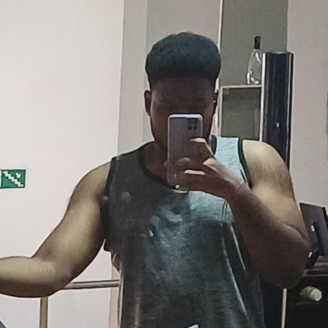

Membros da Equipe
Nathan Frioravanti Martins
Desenvolvedor Back-end
Guilherme Custódio Nieto
Desenvolvedor Back-EndLucas Caribé Araújo
Desenvolvedor Front-End

Uma das características marcantes é o maniqueísmo e a dualidade presentes na narrativa. O texto evidencia a dicotomia entre enganados e enganadores, fracos e fortes, bem e mal. Nesse contexto, a união dos enganados e fracos prevalece sobre os enganadores e fortes, reforçando a prevalência do lado do bem ao longo da trama.
A tradição do "happy end" também é notável na comédia romântica de "O Noviço". Os personagens enfrentam desafios ao longo da história, porém, no desfecho, o bem triunfa e os casais encontram a felicidade, seguindo o padrão de final feliz característico desse gênero.
Outro tema abordado de maneira significativa é a questão da liberdade de escolha, especialmente no contexto dos casamentos arranjados e das expectativas sociais da época. A obra questiona as imposições sociais sobre os jovens, destacando a importância da autonomia e da busca pela própria felicidade.
A presença da cor local é uma característica comum do romantismo, e "O Noviço" não foge a essa regra. A peça apresenta elementos da sociedade carioca da época, valorizando a cultura e as características locais, o que contribui para a ambientação e o realismo da trama.
Além disso, de forma peculiar para o romantismo tradicional, a obra também faz uma denúncia social por meio do humor, sátira e caricaturas. Embora seja uma comédia romântica, "O Noviço" não hesita em abordar questões sociais relevantes da época, usando o riso como uma ferramenta para chamar atenção para essas problemáticas.
Um aspecto interessante a se notar é o comportamento não convencional do herói, Carlos. Ao contrário do padrão de heroísmo romântico, ele utiliza meios moralmente questionáveis para atingir seus objetivos, aproximando-se, em certos aspectos, do vilão Ambrósio. Essa quebra de expectativas em relação ao protagonista adiciona uma camada de complexidade e profundidade à narrativa.
Assim, "O Noviço" de Martins Pena revela-se uma obra rica em temáticas, combinando elementos do romantismo brasileiro com uma abordagem crítica e humorística da sociedade e dos valores de sua época. A peça continua relevante e cativante até os dias atuais, convidando o público a refletir sobre questões universais como o bem e o mal, a liberdade de escolha e as dinâmicas sociais.